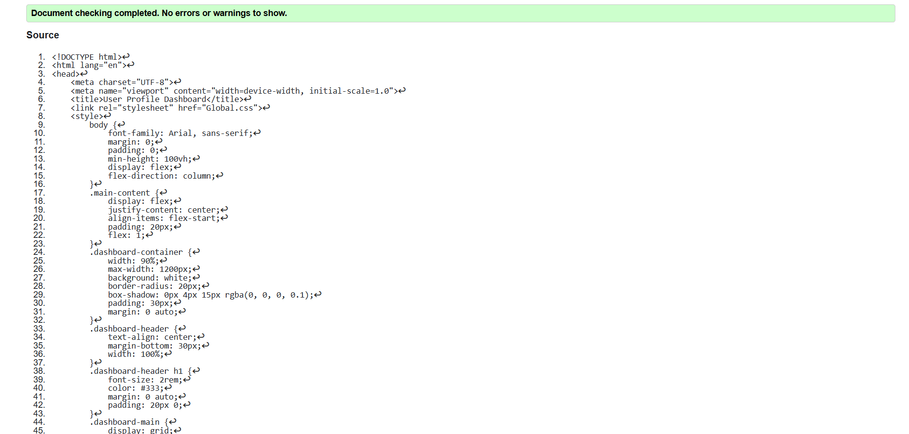
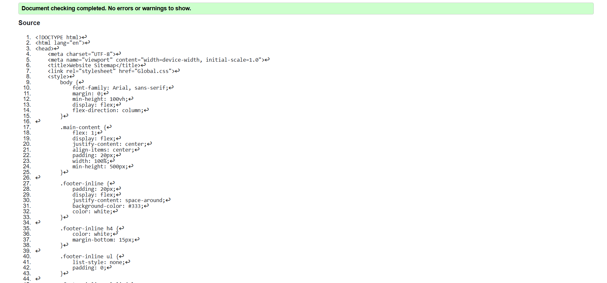
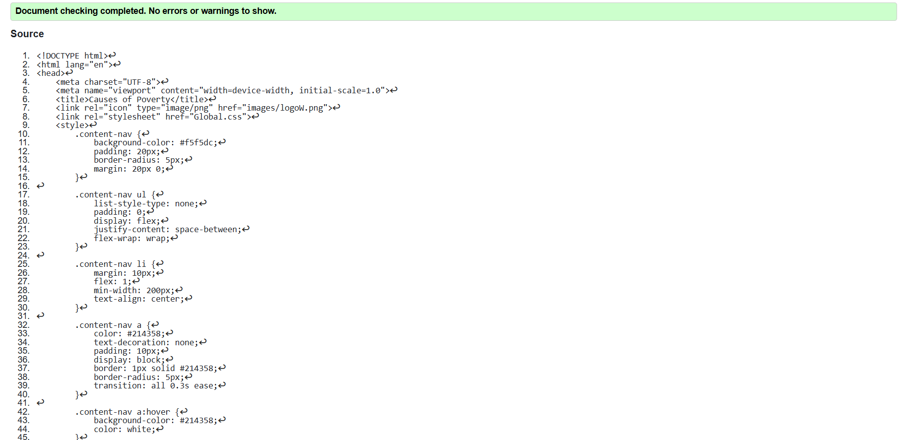

User Profile Page validation report
The validation process helped me identify small but important issues in my 'How We Can Help' section. Initially, some images were missing alt attributes, which could impact accessibility for visually impaired users. After fixing these and ensuring proper HTML structure, the page is now more accessible and follows best practices. Validating the CSS also helped optimize styles, ensuring consistent display across different devices. This experience reinforced the importance of writing clean, validated code for better user experience and web sustainability.
Back to Page Editor page
Sitemap Page validation report
The validation process was essential in ensuring that the sitemap and webpages met web standards. Initially, some HTML errors, such as missing closing tags and unoptimized image alt attributes, were detected and fixed. Sitemap validation helped confirm that search engines could properly index all pages, improving SEO and navigation efficiency. This process reinforced the importance of structured and well-validated code for better user experience and accessibility.
Back to Page Editor page
Content Page validation report
The validation process helped improve the accessibility and readability of the poverty content page. Initially, some images were missing `alt` attributes, which could have impacted visually impaired users. Additionally, I corrected heading hierarchy issues to enhance SEO and readability. Ensuring clean, validated HTML and CSS makes the page more structured, user-friendly, and aligned with SDG goals. This experience reinforced the importance of accessibility and web standards in content creation.
